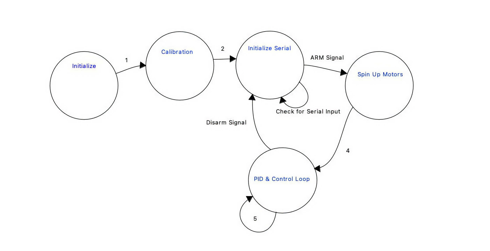
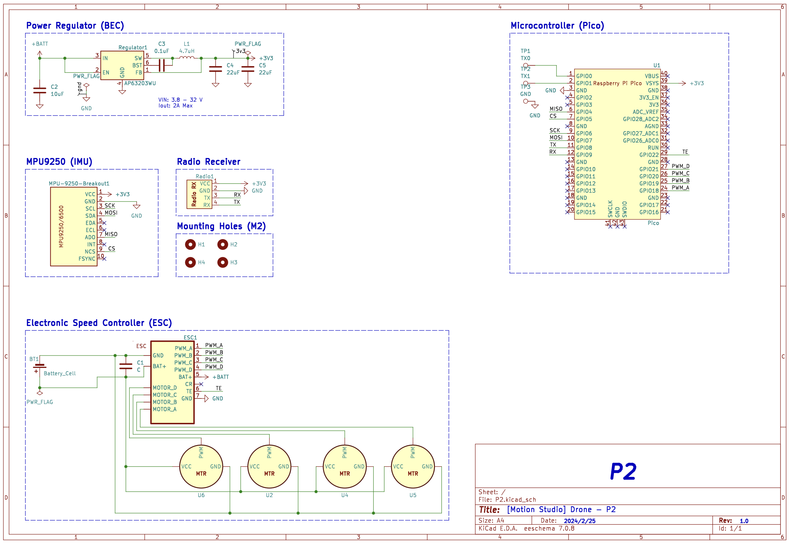

RotorRascals Drone
We built and implemented PID control on a Pico-powered quadcopter to hover on a gimbal stand with throttle input from a controller.
Team Members:
A functional quadcopter system powered by a Raspberry Pi Pico, implementing a full PID-based flight controller from scratch to enable stable hover on a custom gimbal stand was built. Our goal was to design a hands-on, educational drone platform that could be integrated into ECE and MAE course curricula, allowing students to work directly with embedded systems, control theory, and dynamics. Starting from a partially developed hardware prototype and minimal software, we developed our own PID control logic, tuned it through extensive testing, and integrated radio-based throttle control. This project not only demonstrated our understanding of embedded flight control, but also laid the groundwork for a low-cost, reproducible drone platform for future student use.


High Level Design and Inspiration
Rationale and sources of your project idea
Bryan, Martin and Nikolai enjoy drones and quadcopters, we thought it would be a neat idea to develop
a somewhat functioning flight controller to control the drone with an onboard IMU for
orientation data, an external remote to set the throttle position, and an electronic speed
controller (ESC).
Nikolai is a part of the Motion Studio "Drone Squad" advised by Dr. Beatriz Asfora which was
involved in the creating of this final project idea. Out of the Drone Squad there was already a
prototype developed by Deemo Chen with a PCB integrating an IMU and Pi Pico along with a
skeleton of code on how to control each PWM ESC channel.
The long-term objective of this project is to support the integration of these Pico-based drones
made from 3D printed components into ECE and MAE courses. For instance, these drones could be
integrated in the ECE microcontrollers curriculum and the students could work on code
developing/tuning a PID controller. Or, for a MAE dynamics course, the students could use these
drones for dynamics modelling.
Background Math
The effects of a P, I and D terms are well known. If we think of controlling
the mass in a spring-mass-damped system, the P term acts like increasing the stiffness
of the spring, whereas the D term effectively adds damping to the system. An I
term in general achieves the desirable property of having zero steady state.
Even though our system is not a spring-mass-damped system, we can still keep in mind the above
intuitive properties of each of the three terms of a PID controller.
We ended up using the same set of three P, I, D coefficients for
controlling the pitch and the roll angle, and a different set of three P, I,
D coefficients for the yaw angle. Therefore, 6 in total.
We did not do any modelling of the drone ("plant") dynamics, and did the tuning by trial and
error. With more time, we would obtain the equations of motion and linearize about the desired
hover position. We would get a linear set of equations, keeping in mind that we should include a
model of noise in the measurements obtained from the IMU. There would be two standard approaches
we could have taken: either design the controller using the state-space approach, or frequency
design. Preceeding each of these two approaches, we would first have to obtain the dynamical
equations of motion from Newton's second law and then linearize them about the desired hover
position.
Getting the dynamical equations of motion would have been non-trivial for several reasons, and
was not achievable in the allocated time for this project. First of all, we would have to obtain
the center of mass and tensor of inertia with respect to the gimbal, treating the drone as a
rigid body. This could have been obtained from a CAD assembly, but only approximately - due to
the geometry of 3D printed layers, see linked files for the individual parts.
(Furthermore, the chip itself, the IMU, the wiring, the battery would all change these
quantities, and indicate why it would have been really hard to obtain at least a reasonable
model of the dynamics.) Second of all, the friction at the gimbal on the frame of the drone and
the pull of the cables would have to be modelled. The thrust of the propellers in terms of the
duty cycle of our PWM control signal supplied to the motors would be obtained from the
documentation of the propeller's manufacturer. We should keep in mind that the gimbal support
was not located under the center of mass.
Logical Structure
- Initialize radio and sensors
- Calibrate ESCs and Gyro
- Initialize serial PID tuning interface
- Wait for arm signal from controller
- Erase all stored PID values — effectively reset controls
- Spin up motors to minimum throttle and begin executing PID loop
- Continue executing PID loop until disarm
Hardware Software Tradeoffs
- PID loop speed: Since the drone is a complicated, unstable system with 4 motors and 6 degrees of freedom, it is vital to have a fast control loop. From our testing (and Lab 3) we found a rate of 1 kHz works well. Unlike Lab 3, we must compute PID terms for three axes—pitch, roll, and yaw. Pitch and roll share the same PID parameters, while yaw uses different parameters discussed later in this section.
- Pico W: The Pico W provides head-room for future wireless features. A possible enhancement is a web-based PID-tuning interface where students adjust sliders and watch live gyro and controller outputs to evaluate PID performance or drone models.
- Controlling 4 Motors: PWM signals must be calculated for all four motors (versus a single motor in Lab 3), which greatly increases compute time. Combining this with multi-axis control means roughly 6 (PID terms) × 3 (axes) × 4 (motors) = 64 × more computation than Lab 3. Furthermore, changing any motor speed induces torque that affects the yaw axis—covered in the next point.
- Yaw Compensation: Physical coupling between axes required different PID weights for yaw than for pitch/roll. In practice the yaw D term was reduced significantly so yaw corrections would not fight the other axes and cause unstable oscillations.
- Long-Term Gyro Drift: Drift can affect behavior over minutes or hours. Battery life is only ~ 5 minutes, so this is minor; nevertheless, the gyro recalibrates each time a battery is plugged in, ensuring reliable short-term attitude estimates.
Existing patents, copyrights, and trademarks which are relevant to our project.
There are no existing patents, copyrights, and trademarks which are relevant to our project.
Program Design

Program Details
The skeleton of code we started from was unnecessarily complicated, so our biggest challenge was discovering how the actual control algorithms and peripheral interfaces were implemented. The code for the radio interface was reverse-engineered based on the serial string received from the controller. Although that was straightforward, it was far less straightforward to implement pitch, roll, and yaw control from the controller to the rest of the code. Hence, we stuck with throttle and arm only. From there, we scrapped his PID control as it was unfinished and did not work and wrote our own. This has its own challenges as we are implementing it on a quadcopter with four motors. One really important thing that we realized early was that the physical model for how yaw is controlled is extremely different from how pitch and roll is controlled. This means we needed separate coefficients for yaw PID and pitch/roll PID. To implement this, we simply compute the PID values, then apply the coefficients separately in the motor mixing calculations.
The code has the following structure:
├── main.c # Entry point, initializes hardware and control loop
├── lib/
│ ├── Control/
│ │ ├── controller.c # PID controller logic
│ │ └── controller.h
│ ├── ESC/
│ │ ├── esc.c # Motor PWM control
│ │ └── esc.h
│ ├── Filter/
│ │ ├── leaky_LP.c # Leaky low-pass filter
│ │ └── leaky_LP.h
│ ├── MPU9250/
│ │ ├── mpu9250.c # IMU driver
│ │ └── mpu9250.h
│ ├── Radio/
│ │ ├── radio.c # UART radio input parsing
│ │ └── radio.h
├── include/
│ ├── config.h # System-wide configuration macros
│ └── pins.h # Pin definitions
├── utils/
│ └── math_utils.c/h # Optional math helpers
├── Makefile or CMakeLists # Build system configuration3D-Printable Files
- DIY Drone Frame with Motor Holes: Onshape link
- DIY Drone (Jackson & Dylan) Guards: Onshape link
- DIY Drone Gimbal Interfacer: Onshape link
- Drone Gimbal Mount & Spacer: Onshape link
Build Guides
- Frame 3D-printing guide
- Guards 3D-printing guide
- Mechanical assembly guide
- Electrical assembly / Pico software guide
Getting the Code & Build Environment
# Clone the project
git clone https://github.com/nekrutnikolai/RotorRascal.git
# Go to the software directory
cd RotorRascal/software
# Build the project
./builderBill of Materials
Table 1: Drone Components
| Component | Part Description | Estimated Price |
|---|---|---|
| Frame | 3D Printed | $3 – $5 filament |
| Motors | 2306 brushless, 1700–2500 KV | $15 – $30 each |
| ESC (4-in-1) | 30–60 A, DShot600 support | $40 – $80 |
| Propellers | 3″ tri-blade props | $3 – $6 set |
| Radio Receiver (Rx) | ELRS protocol receiver | $15 – $30 |
| Battery | 4S LiPo, 1300–1800 mAh | $25 – $50 |
Table 2: Drone Accessories
| Component | Part Description | Estimated Price |
|---|---|---|
| Transmitter (Tx) | Radiomaster Boxer ELRS RC controller | $100 – $150 |
| Battery Charger | LiPo balance charger (AC/DC or DC only) | $40 – $100 |
Be sure to specifically reference any design or code you used from someone else.
We referenced the design and code found at the following repository: https://github.com/cornellmotionstudio/JacksonDronev2
PID Tuning
Tuning the PIDs on a quadcopter you designed and built from scratch is challenging— there is little external guidance, so progress hinges on a solid grasp of both the physics and the firmware. The hardest part was diagnosing whether instabilities originated from gyro noise or from interactions between pitch/roll corrections and yaw compensation. Any motor adjustment changes yaw torque, so one axis can easily induce errors in another. After experimentation we established a non-oscillatory starting point for all three axes.
Table 3: Initial PID Values
| Axis | Kp | Ki | Kd |
|---|---|---|---|
| Roll / Pitch | 4.5 | 0.4 | 0.08 |
| Yaw | 3.0 | 0.25 | 0.015 |
Continued tuning produced PID values that reacted briskly to disturbances, held level well, and coped with center-of-gravity shifts. The main difficulty was choosing gains that worked across the full throttle range without amplifying vibration-induced noise. A persistent, slowly varying angle error—initially mistaken for steady-state error—was traced to drift in the complementary filter, not the PID loop. Testing on a custom stand (allowing pitch, roll, yaw, and limited vertical motion) let us evaluate stability safely indoors while supplying power and USB connections.
Table 4: Final PID Values
| Axis | Kp | Ki | Kd |
|---|---|---|---|
| Roll / Pitch | 20.0 | 2.0 | 1.5 |
| Yaw | 3.0 | 0.25 | 0.015 |
Results of the Design
Test Data, Scope Traces & Waveforms
We primarily evaluated the drone on a custom-designed gimbal stand that allowed safe experimentation of all rotational axes (roll, pitch, yaw) and limited vertical motion. This test rig let us study hover stability, responsiveness, and overall system behavior under controlled conditions.
PID response was examined by:
- Tapping the frame to introduce known disturbances and observing the response.
- Applying sudden throttle changes and analyzing recovery behavior.
- Streaming gyro data over serial for real-time monitoring.
These experiments led to the finalized PID gains listed in Table 4. Plotting the 1 kHz data stream in real time was impractical because it degraded control-loop performance.
Speed of Execution
The control loop runs at 1 kHz, a rate chosen for its balance of stability and computational headroom on the Pico W. At this speed we observed no hesitation, flicker, or perceptible latency; the drone responded immediately to throttle changes and external disturbances.
Accuracy
Orientation estimates remained accurate for short flight windows (2 – 3 min), with minor long-term drift attributed to IMU noise and complementary-filter limits. Hover control was solid, although yaw corrections occasionally lagged due to cross-axis torque coupling.
Safety Measures
- Gimbal test stand: Restricts movement while preserving realistic control dynamics.
- Arm/disarm switch: Prevents unintended motor spin-up.
- Failsafe shutdown: Motors cut immediately on lost communication.
- Battery-only flights: USB used solely for bench testing and tuning.
- Integral reset on arm: Clears accumulated I error and protects operators.
- Optional prop guards: Printable guards integrate with the frame for added protection.
Usability
- Builder script: One-command firmware compile and flash.
- Serial PID tuner: Real-time gain adjustments accelerate iteration.
- Open-source HW/SW: Fully reproducible for ECE/MAE coursework.
- Documentation: GitHub Wiki guides new users through build and setup.
Conclusion
Design Analysis & Future Work
Given more time, after a thorough analysis outlined in the section “background method,” we would obtain the equations of motion and proceed to linearize them about the desired hover position. These would then guide us in our tuning process by suggesting ranges of values for which the controller gains would result in a stable hovering equilibrium. In particular, the MATLAB Controls Toolbox would likely be vital in this process. We would then iterate over a loop of trial and tuning until we obtain the desired response characteristics.
Conformance to Standards
- IEEE 21451: Digital communication with the IMU and radio receiver follows the smart-transducer interface principles of this standard, supporting modular sensor expansion via the Pico W’s Wi-Fi.
- IEEE 829 (Test Documentation): Although informal, our testing methodology (PID tuning, safety checks, failure recovery) mirrored the repeatable planning and documentation practices prescribed by this standard.
- FCC Part 15: The 2.4 GHz link between transmitter and ELRS receiver complies with ISM-band emissions limits; the system emits no intentional radiation outside the allowed spectrum.
- ISO 12100 (Risk Assessment): Startup gyro calibration, arm/disarm logic, and motor cutoff on communication loss embody this standard’s safety principles. Indoor testing on a gimbal stand further reduced risk.
- ISO 9001 (Quality Management): While uncertified, we followed its quality principles through version-controlled development, structured documentation, and modular integration, supporting maintainability and reproducibility for future coursework.
Intellectual Property Considerations
Code or design reuse?
Yes. We built on code and hardware from the Motion Studio Drone Squad and Deemo Chen:
Public-domain code used?
Yes—the repositories above are publicly available.
Reverse engineering or patent/trademark issues?
N/A. No reverse engineering was involved.
Non-disclosure agreements?
None were required.
Patent opportunities?
None. Similar commercial solutions already exist.
Appendix A — Permissions
The group approves this report for inclusion on the course website.
The group approves the video for inclusion on the course
YouTube channel.
Additional Appendices
- Appendix — Commented Verilog / Program Listings
Our commented source code is available in the repository:
github.com/nekrutnikolai/RotorRascal / software - Appendix — Schematics for External Hardware
(Drawn with KiCad.)
- Appendix — Task Breakdown per Team Member
A detailed task list is not provided because all work was completed collaboratively; contributions were divided roughly evenly among team members. - References
-
Integrated yaw compensation in BetaFlight (popular hobbyist flight
software):
betaflight.com / integrated-yaw -
BetaFlight freestyle tuning principles:
betaflight.com / tuning-principles
-
Integrated yaw compensation in BetaFlight (popular hobbyist flight
software):